Simulating data from summary statistics with stats2data
Source:vignettes/stats2data_application.Rmd
stats2data_application.RmdOverview
stats2data simulates raw datasets whose summary
statistics match reported summary statistics (the targets).
Each module defines an objective, the discrepancy between the summary
statistics of a candidate dataset and the targets, and minimizes it with
simulated annealing. A run stops once the best objective value falls
below the convergence threshold thresh or once the
iteration budget is spent. In this vignette, a run whose best objective
value is below thresh is called converged.
Convergence is a statement about the optimization only, that is, the
simulated summary statistics reproduce the targets to within
thresh. Many different datasets share the same summary
statistics, and a simulated dataset is one of them. The results below
are therefore described in terms of the optimization objective values,
target-vs-simulated differences, run-to-run variability.
The vignette works through four examples:
- the Descriptives module (
optim_vec()), using summary statistics of a simulated dataset with continuous and integer variables; - the ANOVA module (
optim_aov()), using the reported cell means and F-statistics of Reynolds and Besner (2008); - the MLR module (
optim_mlr()), using the reported descriptives, correlations, and regression estimates of Bardwell et al. (2003, 2007); - the parallel workflow
(
parallel_optim()), using the MLR example.
Across the examples, the following functions are demonstrated:
- the optimization functions
optim_vec(),optim_aov(),optim_mlr(), andparallel_optim(), and the refinement stephill_climb(); - the GRIM check
check_grim(); - the inspection methods
print(),summary(),get_stats(),get_rmse(), andcoef(); - the plotting functions
plot_convergence(),plot_cooling(),plot_fit(),plot_stability(), and theplot()methods; - the Shiny interface
run_app().
Installation
# release version from CRAN
install.packages("stats2data")
# development version from GitHub
# install.packages("remotes")
remotes::install_github("sebastian-lortz/stats2data")1. Descriptives module: simulated example
optim_vec() simulates one vector per variable that
reproduces a target mean and SD within given bounds. To illustrate its
use, the targets are computed from a small simulated dataset with two
continuous variables and one integer-valued variable.
1.1 Encoding the targets
set.seed(2026)
N <- 150
example_data <- data.frame(
x1 = rnorm(N, mean = 100, sd = 15), # continuous, symmetric
x2 = rgamma(N, shape = 2, scale = 3), # continuous, right-skewed
x3 = rbinom(N, size = 20, prob = 0.3) # integer-valued
)The targets are the means and SDs rounded to two decimals, as they would typically be reported. The bounds are the observed minimum and maximum, rounded outward:
target_mean <- round(sapply(example_data, mean), 2)
target_sd <- round(sapply(example_data, sd), 2)
range <- rbind(lower = floor(sapply(example_data, min)),
upper = ceiling(sapply(example_data, max)))
integer <- c(FALSE, FALSE, TRUE)
target_mean
#> x1 x2 x3
#> 99.65 6.25 6.15
target_sd
#> x1 x2 x3
#> 15.36 4.15 2.26
range
#> x1 x2 x3
#> lower 61 0 1
#> upper 140 23 13range holds one column of lower and upper bounds per
variable; a vector of length two applies the same bounds to all
variables. integer marks which variables are
integer-valued.
1.2 GRIM check
For integer-valued data, not every mean is attainable: the sum of
N integers divided by N can only take values
on a grid of width 1 / N. The GRIM test (Brown &
Heathers, 2017) checks whether a reported mean, rounded to
decimals, lies on that grid:
check_grim(n = N, target_mean = target_mean[["x3"]], decimals = 2)
#> $test
#> [1] TRUE
#>
#> $grim_mean
#> [1] 6.15For a mean that fails, grim_mean returns the nearest
attainable mean (hypothetical values):
check_grim(n = 7, target_mean = 3.45, decimals = 2)
#> $test
#> [1] FALSE
#>
#> $grim_mean
#> [1] 3.431.3 Running the optimizer
For continuous variables, optim_vec() starts from a
vector whose mean lies within thresh of the target mean and
anneals the values toward the target SD; the moves keep the mean fixed.
For integer variables, it draws a distribution from SPRITE (Heathers et
al., 2018) via rsprite2 whose mean and SD match the targets
at the number of decimals given by sprite_prec. The
objective of each variable is the absolute difference between its
simulated and target SD.
Both statistics are given to two decimals, so
sprite_prec = c(2, 2), and thresh = 0.005 is
set to half a unit of the last decimal (both are the defaults). The
remaining arguments are at their defaults (max_iter = 5e5,
init_temp = 1e-3, cooling_rate = NULL,
i.e. (max_iter - 10) / max_iter,
max_starts = 3).
1.4 Inspecting the result
print() shows the sample size and the best objective
value per variable:
result_vec
#> stats2data Descriptives result
#> Variables: 3
#> N: 150
#> Best objective per variable:
#> x1: 0.002753
#> x2: 0.004366
#> x3: 0.0003847The best objective values are below thresh = 0.005 for
all three variables. summary() adds the target and
simulated means and SDs and their RMSEs; the largest absolute difference
between a simulated and a target mean is 0.00499:
summary(result_vec)
#> stats2data Descriptives Summary
#> -----------------------------------------------
#> N: 150 | Variables: 3
#>
#> Best objective per variable:
#> x1: 0.002753
#> x2: 0.004366
#> x3: 0.0003847
#>
#> RMSE
#> Means: 0.004505
#> SDs: 0.002988
#>
#> Target vs. Simulated:
#> variable target_mean sim_mean target_sd sim_sd
#> x1 99.65 99.645 15.36 15.357
#> x2 6.25 6.255 4.15 4.146
#> x3 6.15 6.147 2.26 2.260get_stats() returns the simulated statistics and
get_rmse() the RMSEs between simulated and target
statistics:
get_stats(result_vec)
#> $mean
#> x1 x2 x3
#> 99.645019 6.254995 6.146667
#>
#> $sd
#> x1 x2 x3
#> 15.357247 4.145634 2.259615
get_rmse(result_vec)
#> $rmse_mean
#> [1] 0.004504504
#>
#> $rmse_sd
#> [1] 0.002988441If SPRITE finds no distribution for an integer variable, the reason
is stored per variable in error_msgs (NULL
when SPRITE succeeded):
result_vec$error_msgs
#> [[1]]
#> NULL
#>
#> [[2]]
#> NULL
#>
#> [[3]]
#> NULL1.5 Diagnostics
plot_convergence() shows the best objective value across
iterations. For a stats2data_vec result, run
selects the variable. log_y = TRUE uses a logarithmic y
axis, and the shaded band marks the region below
thresh.
plot_convergence(result_vec, run = 1, log_y = TRUE)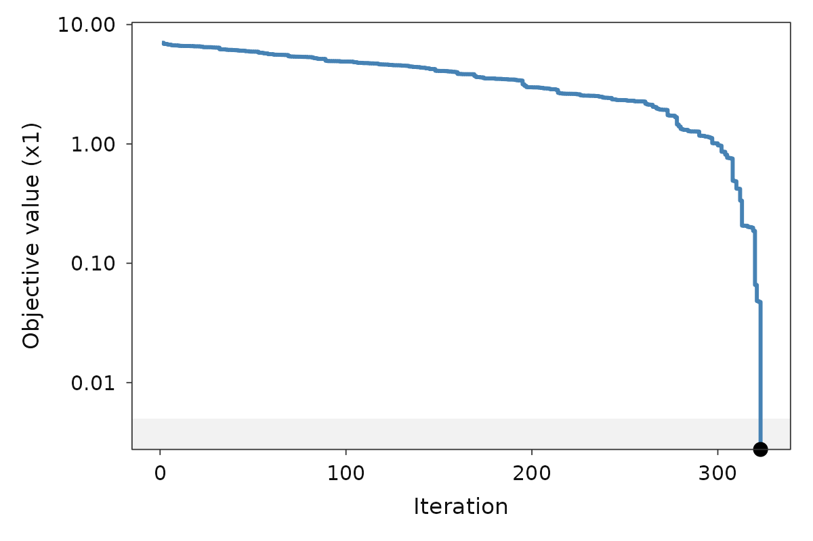
The trajectory of x1 has 323 iterations. Integer
variables are drawn by SPRITE without annealing, so their trajectory
consists of a single value.
plot_cooling() shows the temperature schedule implied by
init_temp, cooling_rate, and
max_iter:
plot_cooling(result_vec)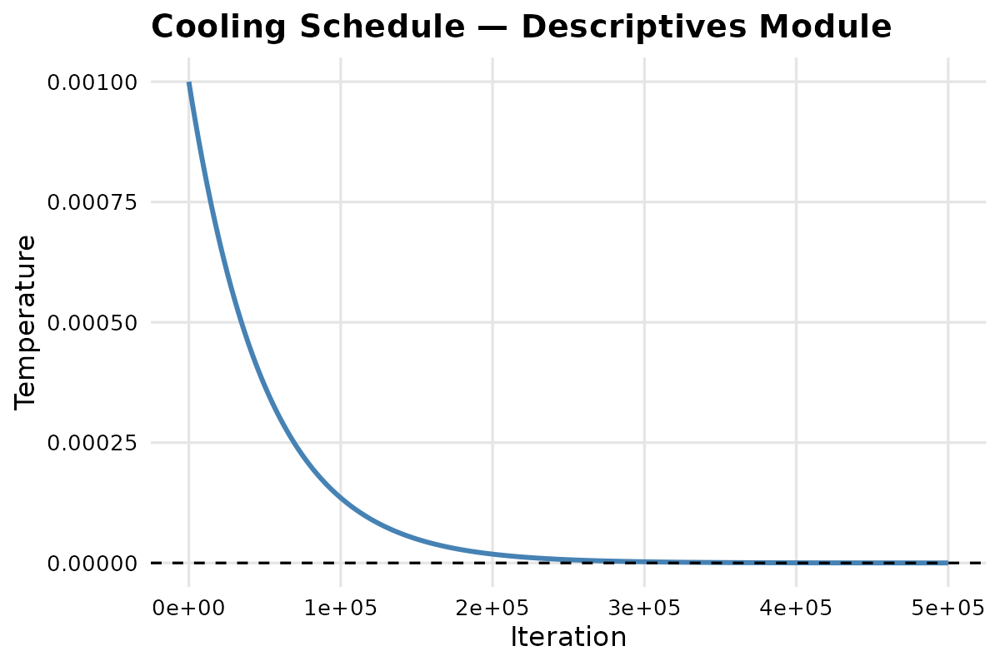
1.6 Target vs. simulated statistics
plot_fit() plots the difference between simulated and
target statistics. With standardised = FALSE, the
differences are on the original scale; the shaded band marks
+/- thresh. order = "fit" sorts the statistics
by absolute difference.
plot_fit(result_vec, standardised = FALSE, order = "fit")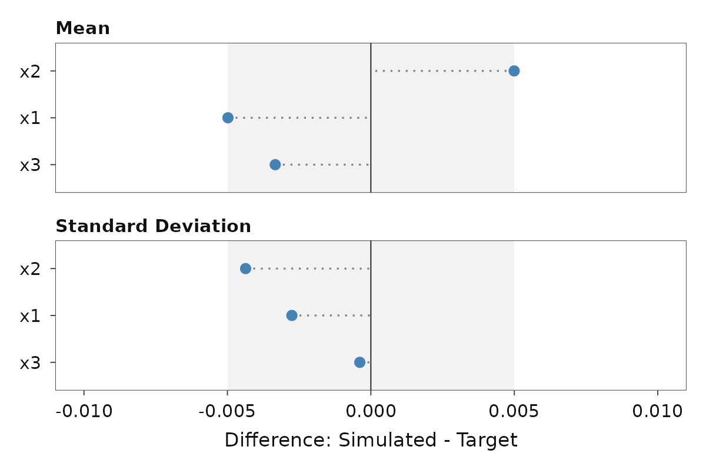
The same plots are available through plot(), with
which selecting the panel:
1.7 Simulated data
The simulated data are stored in result_vec$data, one
column per variable:
data_vec <- result_vec$data
head(data_vec)
#> x1 x2 x3
#> 1 108.56228 6.043737 9
#> 2 109.49172 1.140020 9
#> 3 93.02921 8.372150 6
#> 4 94.24471 1.906615 6
#> 5 98.47697 1.315124 6
#> 6 76.09617 7.676196 9
data_long <- data.frame(
variable = factor(rep(names(data_vec), each = nrow(data_vec)), levels = names(data_vec)),
value = unlist(data_vec, use.names = FALSE)
)
ggplot(data_long, aes(x = value)) +
geom_histogram(bins = 15, fill = "grey60", colour = "grey20") +
facet_wrap(~ variable, scales = "free") +
labs(x = NULL, y = "Count") +
theme_minimal()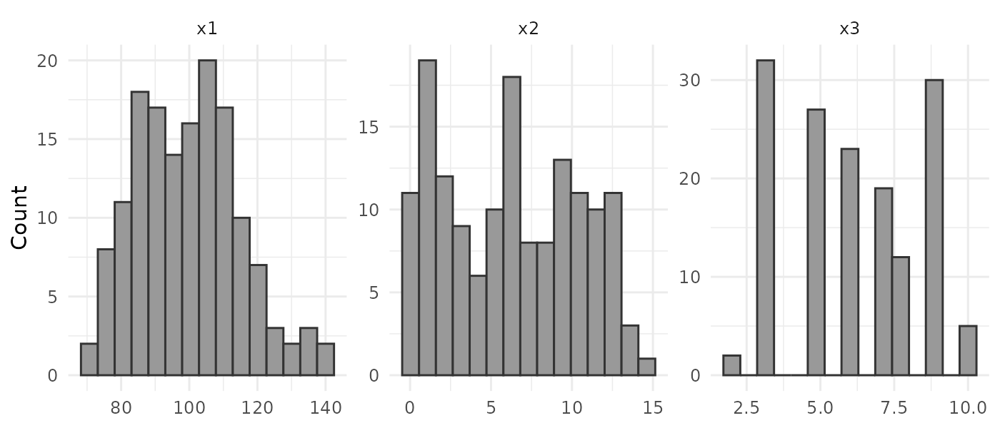
2. ANOVA module: Reynolds and Besner (2008)
Reynolds and Besner (2008, Experiment 5) examined how contextual predictability affects response times in word and nonword naming; the study was among those replicated by the Open Science Collaboration (2015). To our knowledge, the raw data are not publicly available.
2.1 Reported summary statistics
The study reports a 2 x 2 within-subjects design
(S = 16) with four cell means, indexed by stimulus type
(Factor1) and switch condition (Factor2): 543,
536, 614, and 618 ms. It reports MSE = 3070 for the
Factor1 effect, F(1, 15) = 30.5 (partial eta
squared .670) for Factor1, and F < 1 for
Factor2 (.002) and the interaction (.015).
S <- 16
mse <- 3070
target_group_means <- c(543, 536, 614, 618)
eta2 <- c(0.002, 0.015) # Factor2, Factor1:Factor2
df_err <- S - 1The numerator mean squares implied by the cell means of the balanced 2 x 2 within-subjects design are:
m_cell <- matrix(target_group_means, nrow = 2, byrow = TRUE) # rows: Factor1, cols: Factor2
m_grand <- mean(m_cell)
ms_f1 <- S * 2 * sum((rowMeans(m_cell) - m_grand)^2)
ms_f2 <- S * 2 * sum((colMeans(m_cell) - m_grand)^2)
ms_int <- S * sum((m_cell - outer(rowMeans(m_cell), colMeans(m_cell), "+") + m_grand)^2)
c(ms_f1 = ms_f1, ms_f2 = ms_f2, ms_int = ms_int)
#> ms_f1 ms_f2 ms_int
#> 93636 36 484The reported Factor1 statistics are consistent with each
other: the implied mean square divided by the reported MSE
gives F = 30.5, and F / (F + df_error) gives
the reported partial eta squared of .670.
For the two effects reported as F < 1, the
F-statistics are set from the reported partial eta squared via
F = eta^2 * df_error / (1 - eta^2) (one numerator degree of
freedom). The modules require bounds for the outcome, which the study
does not report; the range of the reported cell means is extended by
four times sqrt(MSE), the residual SD implied by the MSE,
and rounded outward. The summary statistics are encoded in one list of
optim_aov() arguments:
F_value_derived <- c(round(ms_f1 / mse, 1), round(eta2 * df_err / (1 - eta2), 3))
sumstats <- list(
S = S,
levels = c(2, 2),
factor_type = c("within", "within"),
formula = "outcome ~ Factor1 * Factor2 + Error(ID / (Factor1 * Factor2))",
integer = FALSE,
target_f_list = list(
effect = c("Factor1", "Factor2", "Factor1:Factor2"),
F_value = F_value_derived
),
target_group_means = target_group_means,
range = c(floor(min(target_group_means) - 4 * sqrt(mse)),
ceiling(max(target_group_means) + 4 * sqrt(mse)))
)
sumstats$target_f_list$F_value
#> [1] 30.500 0.030 0.228
sumstats$range
#> [1] 314 840target_group_means lists the cells with
Factor1 varying slowest (11, 12, 21, 22). Between-subjects
and mixed designs are specified through factor_type (and,
for unequal group sizes, subgroup_sizes).
2.2 Simulating a dataset
optim_aov() is called with its default hyperparameters
(max_iter = 3e4, thresh = 0.005,
max_starts = 3, init_temp = 1e-3,
cooling_rate = NULL,
i.e. (max_iter - 10) / max_iter). The objective is the RMSE
between the simulated and target F-statistics.
2.3 Inspecting the output
result_aov
#> stats2data ANOVA result
#> Design: 2 x 2 (within, within)
#> Subjects: 16
#> Effects: Factor1, Factor2, Factor1:Factor2
#> Best objective: 0.00346117
summary(result_aov)
#> stats2data ANOVA Summary
#> -----------------------------------------------
#> Design: 2 x 2 (within, within)
#> Subjects:
#> Best objective: 0.00346117
#>
#> RMSE
#> F-statistics: 0.003461
#> Group means: 9.392e-13
#>
#> -----------------------------------------------
#> F-values (Target vs. Simulated):
#> effect target_F sim_F
#> Factor1 30.500 30.49911
#> Factor2 0.030 0.02408
#> Factor1:Factor2 0.228 0.22774
#>
#> -----------------------------------------------
#> Group Means (Target vs. Simulated):
#> cell target_mean sim_mean
#> F1=1, F2=1 543 543
#> F1=1, F2=2 536 536
#> F1=2, F2=1 614 614
#> F1=2, F2=2 618 618The simulated F-statistics are 30.499, 0.024, 0.228 for
Factor1, Factor2, and
Factor1:Factor2 (targets 30.5, 0.030, 0.228); the
F-statistic RMSE is 0.003 and the cell-mean RMSE 0.000000000000939.
Before the annealing, optim_aov() may shift the target
cell means by less than thresh so that the means and
F-statistics can be matched jointly. The values used are stored in
adjusted_targets:
result_aov$adjusted_targets
#> $group_means
#> [1] 543 536 614 618
#>
#> $F_values
#> [1] 30.500 0.030 0.228get_stats() returns the ANOVA table of the simulated
data (fitted with afex), the F-statistics, and the cell
means; get_rmse() returns the two RMSEs:
get_stats(result_aov)
#> $model
#> Anova Table (Type 3 tests)
#>
#> Response: outcome
#> num Df den Df MSE F ges Pr(>F)
#> Factor1 1 15 3070.1 30.4991 0.43050 5.852e-05 ***
#> Factor2 1 15 1495.2 0.0241 0.00029 0.8788
#> Factor1:Factor2 1 15 2125.2 0.2277 0.00389 0.6401
#> ---
#> Signif. codes: 0 '***' 0.001 '**' 0.01 '*' 0.05 '.' 0.1 ' ' 1
#>
#> $F_value
#> [1] 30.49911423 0.02407665 0.22773815
#>
#> $mean
#> 1_1 1_2 2_1 2_2
#> 543 536 614 618
get_rmse(result_aov)
#> $rmse_F
#> [1] 0.003461175
#>
#> $rmse_mean
#> [1] 9.392074e-132.4 Diagnostics
The convergence trajectory (first_iter = 1 skips the
first iteration) and the target-vs-simulated differences are obtained
with:
plot_convergence(result_aov, first_iter = 1, log_y = TRUE)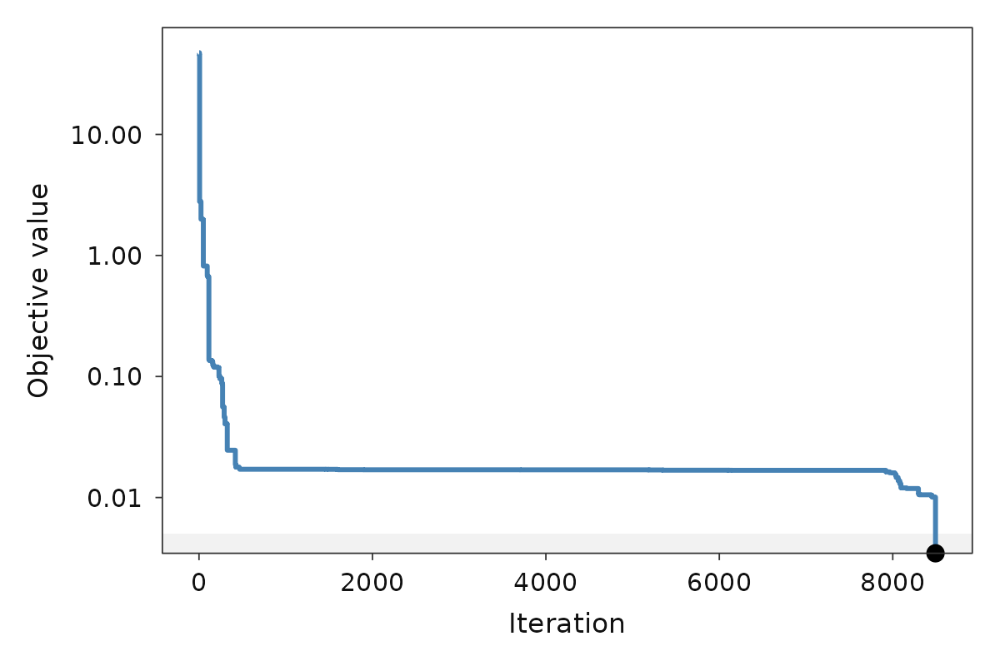
plot_fit(result_aov, standardised = FALSE)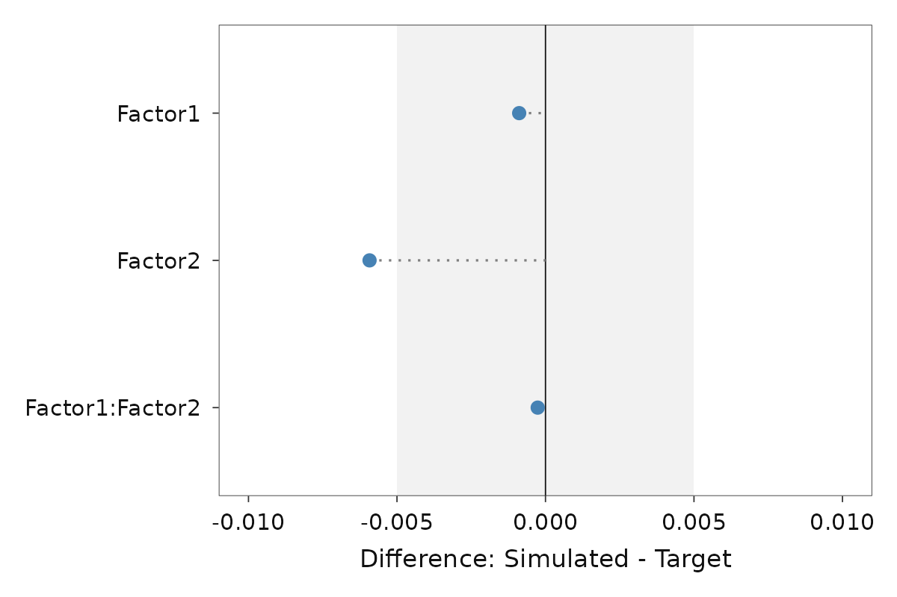
first_iter = 5000 plots from iteration 5000 onwards:
plot_convergence(result_aov, first_iter = 5000)plot_cooling() shows the temperature schedule:
plot_cooling(result_aov)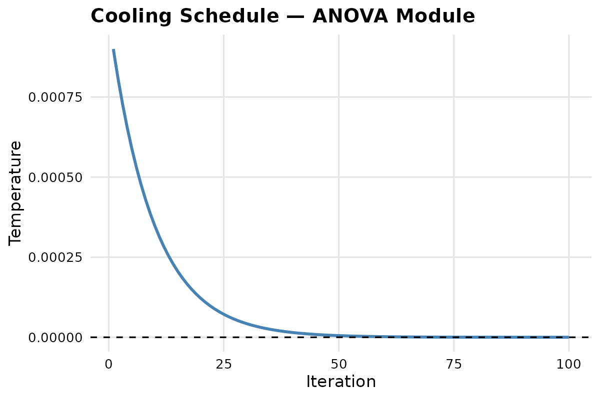
2.5 Simulated data
The data are stored in long format, one row per subject and cell. The
simulated observations lie within range; the second line
checks whether any observation equals one of the bounds:
range(result_aov$data$outcome)
#> [1] 469.2889 735.7955
any(result_aov$data$outcome %in% sumstats$range)
#> [1] FALSE
data_aov <- result_aov$data
head(data_aov)
#> ID Factor1 Factor2 outcome
#> 1 1 1 1 526.5609
#> 2 1 1 2 594.2713
#> 3 1 2 1 641.5214
#> 4 1 2 2 551.0167
#> 5 2 1 1 535.8782
#> 6 2 1 2 549.8449
aggregate(outcome ~ Factor1 + Factor2, data = data_aov, FUN = mean)
#> Factor1 Factor2 outcome
#> 1 1 1 543
#> 2 2 1 614
#> 3 1 2 536
#> 4 2 2 618
ggplot(data_aov, aes(x = interaction(Factor1, Factor2, sep = "-"), y = outcome)) +
geom_jitter(width = 0.1, colour = "grey40") +
stat_summary(fun = mean, geom = "point", shape = 4, size = 4) +
labs(x = "Cell (Factor1-Factor2)", y = "Outcome") +
theme_minimal()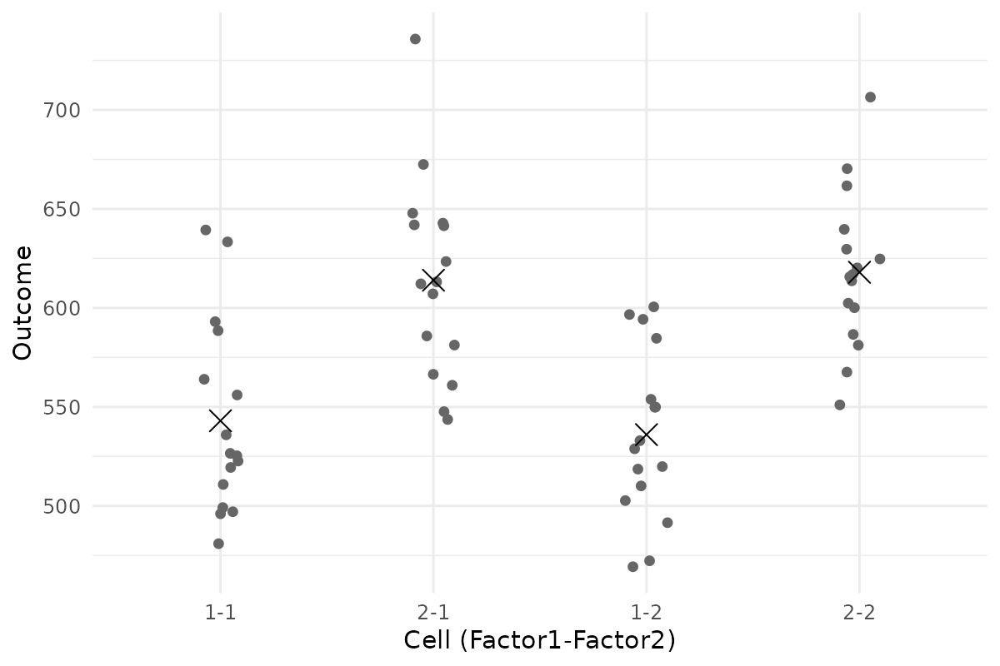
Crosses mark the simulated cell means.
3. MLR module: Bardwell et al. (2003)
Bardwell et al. (2003) examined whether depressive symptoms or apnea
severity better predict fatigue in N = 60 patients with
obstructive sleep apnea. This example uses the statistics reported
there:
- means, SDs, and ranges from Table 1;
- the regression of fatigue on both apnea indices and depressive symptoms (Step 2) from Table 2;
- the correlations of the three predictors with fatigue from the Results section.
The same descriptives and coefficients are reprinted in Bardwell et
al. (2007), with ranges rounded to integers. The variables are the
respiratory disturbance index (RDI), the percentage of time
with oxygen saturation below 90% (SaO2), the Center for
Epidemiological Studies Depression Scale score (CESD), and
the fatigue-inertia subscale of the Profile of Mood States
(Fatigue). To our knowledge, the raw data are not publicly
available.
3.1 Encoding the targets
N <- 60
target_mean <- c(RDI = 48.8, SaO2 = 17.3, CESD = 12.6, Fatigue = 10.8)
target_sd <- c(RDI = 27.1, SaO2 = 20.1, CESD = 11.3, Fatigue = 7.3)
range <- rbind(lower = c(RDI = 15, SaO2 = 0, CESD = 0, Fatigue = 0),
upper = c(RDI = 111, SaO2 = 80.9, CESD = 49, Fatigue = 28))
integer <- c(FALSE, FALSE, TRUE, TRUE)RDI and SaO2 are treated as continuous,
CESD and Fatigue as integer-valued sum scores.
Both means pass the GRIM check:
vapply(c("CESD", "Fatigue"), function(v) {
check_grim(n = N, target_mean = target_mean[[v]], decimals = 1)$test
}, logical(1))
#> CESD Fatigue
#> TRUE TRUEtarget_cor holds the upper triangle of the correlation
matrix of all variables in target_mean, in the order of
target_mean. Unreported correlations are NA
and excluded from the objective:
vars <- names(target_mean)
cor_mat <- matrix(NA_real_, 4, 4, dimnames = list(vars, vars))
cor_mat["RDI", "Fatigue"] <- 0.11
cor_mat["SaO2", "Fatigue"] <- 0.20
cor_mat["CESD", "Fatigue"] <- 0.68
target_cor <- cor_mat[upper.tri(cor_mat)]
target_cor
#> [1] NA NA NA 0.11 0.20 0.68target_reg and target_se follow the terms
of reg_equation, intercept first. The intercept is not
reported; it is derived from the means and slopes via
b0 = mean(Fatigue) - sum(b * mean(X)), and its standard
error is set to NA:
reg_equation <- "Fatigue ~ RDI + SaO2 + CESD"
b <- c(RDI = 0.023, SaO2 = 0.008, CESD = 0.438)
b0 <- target_mean[["Fatigue"]] - sum(b * target_mean[names(b)])
target_reg <- c("(Intercept)" = round(b0, 3), b)
target_se <- c(NA, 0.034, 0.048, 0.066)
target_reg
#> (Intercept) RDI SaO2 CESD
#> 4.020 0.023 0.008 0.438The arguments are collected in one list, which is reused in Section 4:
3.2 Running the optimizer
optim_mlr() first calls optim_vec() to
simulate the marginals and then optimizes the values of the predictors
with simulated annealing, followed by hill climbing
(hill_climbs). In the marginal step, thresh
applies to the continuous variables; the integer variables are matched
by SPRITE to the precision given by sprite_prec. The
objective is
weight * correlation error + (1 - weight) * regression error,
where the regression error includes the standard errors when
target_se is given.
The call uses thresh = 0.005, the default of
optim_mlr(), which equals half a unit of the second
decimal, the precision of the reported correlations. A stricter
threshold would demand more precision than the reported statistics
carry. The coefficients are reported to three decimals, but they depend
on means and SDs rounded to one decimal. For example, the rounding of
the SDs of Fatigue (7.3) and CESD (11.3) alone
leaves the CESD slope (0.438) uncertain by about +/-
0.005.
All other arguments are sprite_prec = c(1, 1) (one
reported decimal) and the defaults (weight = 0.5,
max_iter = 1e5, max_starts = 3,
hill_climbs = 1e4; init_temp = NULL is
calibrated from the objective changes of random swaps,
cooling_rate = NULL is
(max_iter - 10) / max_iter).
3.3 Inspecting the result
result_mlr
#> stats2data MLR result
#> N: 60
#> Equation: Fatigue ~ RDI + SaO2 + CESD
#> Best objective: 0.00235089The best objective value is 0.00235, which is not below
thresh = 0.001.
summary(result_mlr)
#> stats2data MLR Summary
#> -----------------------------------------------
#> N: 60 | Model: Fatigue ~ RDI + SaO2 + CESD
#> Best objective: 0.00235089
#>
#> RMSE
#> Correlations: 2.741e-06
#> Regression Coefficients: 0.001076
#> Standard Errors: 0.00707
#>
#> Descriptives (Target vs. Simulated):
#> variable target_mean sim_mean target_sd sim_sd
#> RDI 48.8 48.80 27.1 27.10
#> SaO2 17.3 17.30 20.1 20.10
#> CESD 12.6 12.62 11.3 11.34
#> Fatigue 10.8 10.75 7.3 7.35
#>
#> Coefficients (Target vs. Simulated):
#> term target_reg sim_reg target_se sim_se
#> (Intercept) 4.020 4.020260 NA 1.65637
#> RDI 0.023 0.022633 0.034 0.02727
#> SaO2 0.008 0.007136 0.048 0.03783
#> CESD 0.438 0.436081 0.066 0.06491
#>
#> Correlations (Target vs. Simulated):
#> pair target_cor sim_cor
#> RDI-SaO2 NA 0.25224
#> RDI-CESD NA 0.03217
#> SaO2-CESD NA 0.23702
#> RDI-Fatigue 0.11 0.11000
#> SaO2-Fatigue 0.20 0.20000
#> CESD-Fatigue 0.68 0.68000get_stats() returns the fitted lm object,
the coefficients, standard errors, correlations (upper triangle in the
order predictors, outcome), means, and SDs of the simulated data.
coef() refits the regression and returns the
coefficients:
stats_mlr <- get_stats(result_mlr)
names(stats_mlr)
#> [1] "model" "reg" "se" "cor" "mean" "sd"
summary(stats_mlr$model)
#>
#> Call:
#> stats::lm(formula = frm, data = d)
#>
#> Residuals:
#> Min 1Q Median 3Q Max
#> -12.4485 -3.5373 0.0401 3.2369 13.7791
#>
#> Coefficients:
#> Estimate Std. Error t value Pr(>|t|)
#> (Intercept) 4.020260 1.656366 2.427 0.0185 *
#> RDI 0.022633 0.027270 0.830 0.4101
#> SaO2 0.007136 0.037828 0.189 0.8510
#> CESD 0.436081 0.064913 6.718 1.01e-08 ***
#> ---
#> Signif. codes: 0 '***' 0.001 '**' 0.01 '*' 0.05 '.' 0.1 ' ' 1
#>
#> Residual standard error: 5.49 on 56 degrees of freedom
#> Multiple R-squared: 0.4705, Adjusted R-squared: 0.4421
#> F-statistic: 16.59 on 3 and 56 DF, p-value: 7.842e-08
coef(result_mlr)
#> (Intercept) RDI SaO2 CESD
#> 4.020260126 0.022632648 0.007136383 0.436080581
get_rmse(result_mlr)
#> $rmse_cor
#> [1] 2.740782e-06
#>
#> $rmse_reg
#> [1] 0.001076176
#>
#> $rmse_se
#> [1] 0.00706953The marginal result of the internal optim_vec() call is
stored in result_mlr$optim_vec and supports the methods of
Section 1:
get_rmse(result_mlr$optim_vec)
#> $rmse_mean
#> [1] 0.02658335
#>
#> $rmse_sd
#> [1] 0.0314791
plot_fit(result_mlr$optim_vec, standardised = FALSE)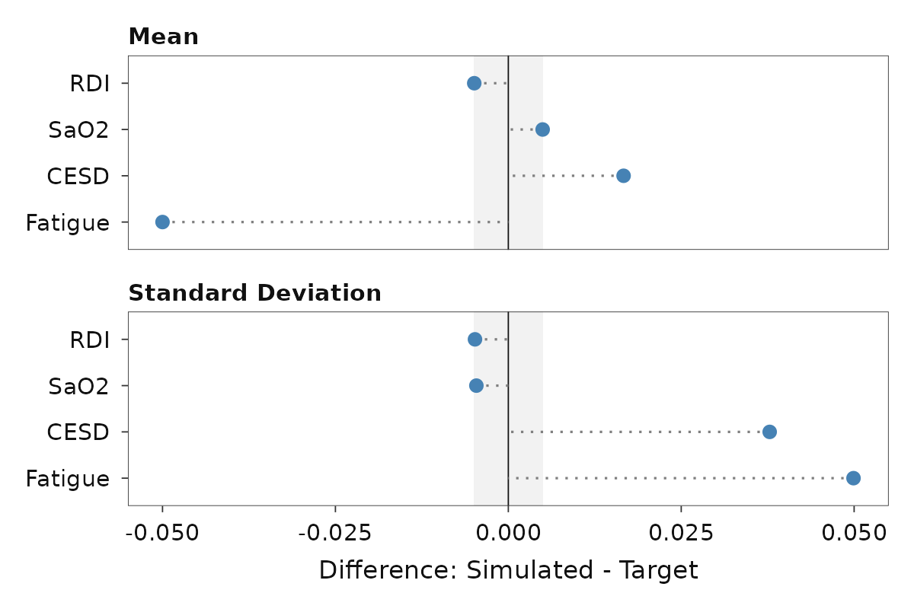
The RMSEs exceed thresh because thresh
applies only to the continuous variables RDI and
SaO2, whereas the integer variables CESD and
Fatigue are matched by SPRITE only to the reported
precision (sprite_prec = c(1, 1), i.e. within +/-
0.05).
3.4 Diagnostics
plot_convergence() shows the best objective value across
the annealing iterations; first_iter skips leading
iterations, here the first 10%:
n_iter_mlr <- length(result_mlr$track_objective)
plot_convergence(result_mlr, log_y = TRUE, first_iter = floor(n_iter_mlr / 10))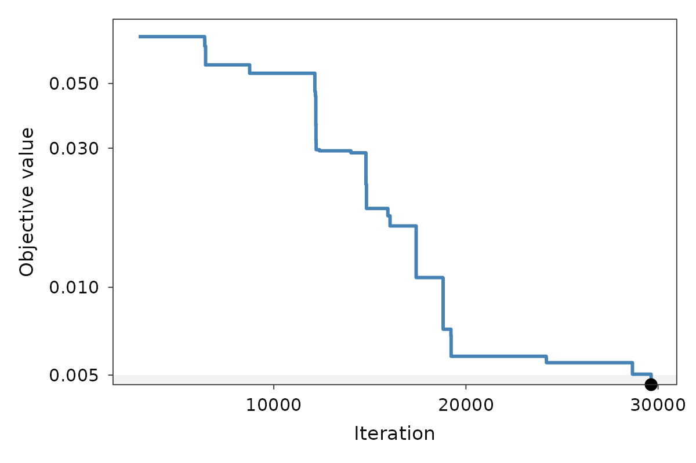
With ratio = TRUE, the plot shows the ratio of the
correlation error to the regression error of the best candidate, with
lines at its mean, median, and final value (show_mean,
show_median, show_final). A ratio above 1
means that the correlation component is the larger of the two.
plot_convergence(result_mlr, ratio = TRUE)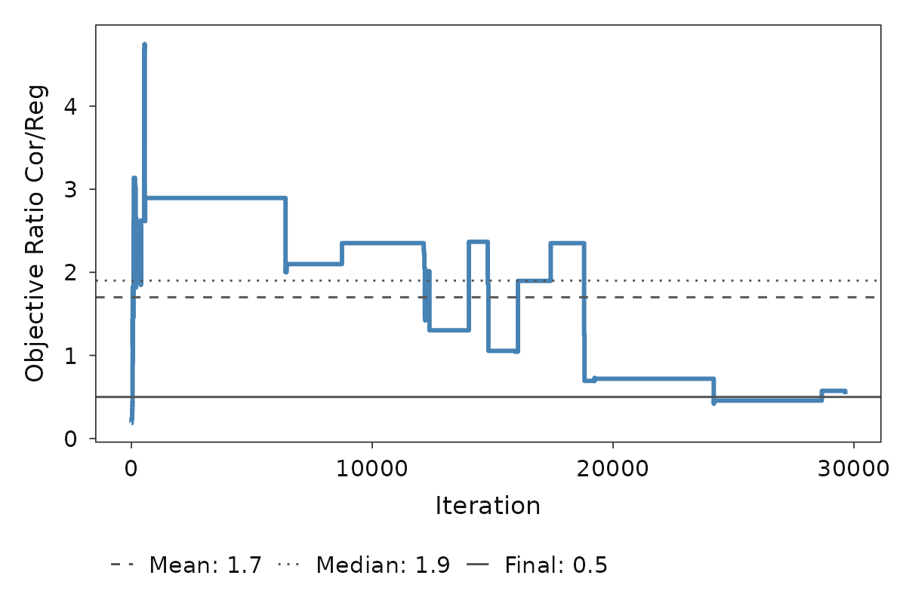
The final ratio is 0.533.
plot_cooling() uses the stored init_temp
and cooling_rate, i.e. the values calibrated during the
run:
result_mlr$inputs$init_temp
#> [1] 0.02971333
plot_cooling(result_mlr)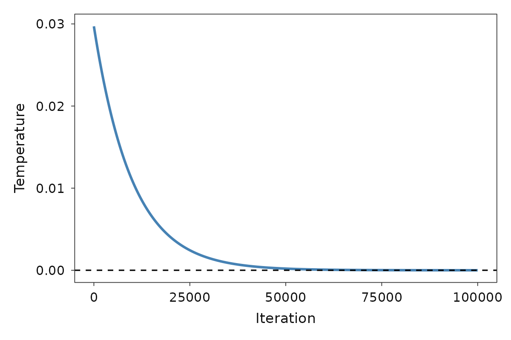
3.5 Balancing the objective with weight
weight sets how much the correlation and the regression
components contribute to the objective. Objective values obtained with
different weights are on different scales and are not compared directly;
the unweighted RMSEs of get_rmse() are. The optimization is
repeated with weight = 0.05:
set.seed(2026)
result_mlr_w05 <- do.call(optim_mlr, modifyList(args_mlr, list(weight = 0.05)))
rbind(
"weight = 0.5" = unlist(get_rmse(result_mlr)),
"weight = 0.05" = unlist(get_rmse(result_mlr_w05))
)
#> rmse_cor rmse_reg rmse_se
#> weight = 0.5 2.740782e-06 0.001076176 0.007069530
#> weight = 0.05 4.023950e-03 0.001273072 0.005197356The table shows how the RMSEs of the correlations, coefficients, and
standard errors change with weight in this example. Which
balance is preferable depends on which targets matter most for the
intended use of the data. The remainder of this section continues with
the weight = 0.5 result.
3.6 Target vs. simulated statistics
plot_fit(result_mlr, standardised = FALSE)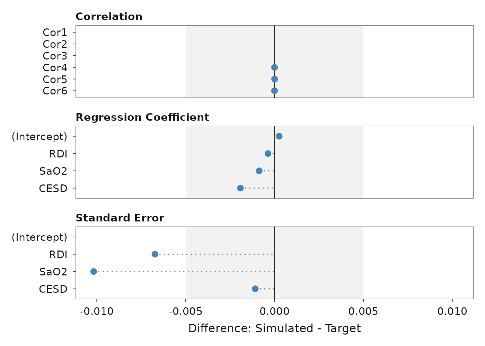
With the default standardised = TRUE, the differences
are divided by the target values (for targets of zero, the
unstandardised difference is shown). The plot() method
offers the same panels, including which = "ratio":
3.7 Refinement with hill_climbs
After the annealing, optim_mlr() refines the best
candidate by hill climbing: it repeatedly swaps pairs of values within a
predictor column and keeps a swap only if it lowers the objective.
hill_climbs sets the number of hill-climbing iterations
(default 1e4); hill_climbs = 0 skips the
refinement. The optimization is repeated without refinement and with a
longer refinement. With the same seed, the annealing is identical across
the calls, so differences reflect the refinement only:
set.seed(2026)
result_mlr_hc0 <- do.call(optim_mlr, modifyList(args_mlr, list(hill_climbs = 0)))
set.seed(2026)
result_mlr_hc5e4 <- do.call(optim_mlr, modifyList(args_mlr, list(hill_climbs = 5e4)))
rbind(
"hill_climbs = 0" = c(best_objective = result_mlr_hc0$best_objective,
unlist(get_rmse(result_mlr_hc0))),
"hill_climbs = 1e4" = c(best_objective = result_mlr$best_objective,
unlist(get_rmse(result_mlr))),
"hill_climbs = 5e4" = c(best_objective = result_mlr_hc5e4$best_objective,
unlist(get_rmse(result_mlr_hc5e4)))
)
#> best_objective rmse_cor rmse_reg rmse_se
#> hill_climbs = 0 0.004637482 3.224866e-03 0.004532033 0.007617272
#> hill_climbs = 1e4 0.002350895 2.740782e-06 0.001076176 0.007069530
#> hill_climbs = 5e4 0.002350895 2.740782e-06 0.001076176 0.007069530track_objective covers the annealing only, so the effect
of the refinement is visible in best_objective and the
RMSEs, not in plot_convergence().
3.8 Simulated data
data_mlr <- result_mlr$data
head(data_mlr)
#> RDI SaO2 CESD Fatigue
#> 1 28.65536 3.381411e-04 23 7
#> 2 66.79344 2.901021e+01 20 15
#> 3 87.37245 4.891688e+01 19 19
#> 4 61.00486 3.667871e+00 23 17
#> 5 68.41232 3.010219e+01 6 1
#> 6 78.87396 1.745616e+00 24 194. Parallel workflow: Bardwell et al. (2003)
Each run of an optimizer is subject to randomness, and many datasets
share the same summary statistics, so repeated runs return different
datasets. parallel_optim() repeats the optimization with
the same arguments and collects the runs; seed gives each
run its own reproducible random-number stream.
To keep the build time of this vignette short, the MLR optimization
of Section 3 is repeated 10 times with a reduced iteration budget and
run sequentially (cores = 1). For applied use, the default
budget and more runs are recommended.
result_par <- parallel_optim(
FUN = optim_mlr, # MLR module
args = args_mlr, # reported summary statistics
runs = 10, # number of optimization runs
cores = 1, # number of parallel workers
seed = 2026 # reproducible seed per run
)With cores > 1, parallel_optim() sets up
a future::multisession plan (Bengtsson, 2021) and restores
any previous plan on exit. Because every run has its own random-number
stream derived from seed, the results do not depend on
cores:
result_par <- parallel_optim(FUN = optim_mlr, args = args_mlr,
runs = 10, cores = 2, seed = 2026)4.1 Inspecting the parallel output
result_par
#> stats2data parallel result
#> Module: mlr
#> Runs: 10
#> Best objective (across runs): 0.002273
#> Mean objective (across runs): 0.0027299910 of 10 runs have a best objective value below thresh =
0.005. Across runs, the best objective values range from 0.00227 to
0.00324.
summary() lists the best and mean objective values, the
RMSE against the targets and between runs, and the target statistics
aggregated across runs:
summary(result_par)
#> stats2data Parallel Summary
#> -----------------------------------------------
#> Module: mlr | Runs: 10
#> Best objective: 0.002273
#> Mean error: 0.00272999
#> SD error: 0.000305429
#>
#> Target RMSE (across runs):
#> metric mean sd min max
#> rmse_cor 8.231e-05 7.191e-05 1.692e-05 0.0002471
#> rmse_reg 2.572e-03 1.303e-03 1.275e-03 0.0051126
#> rmse_se 7.560e-03 5.283e-04 6.503e-03 0.0079971
#>
#> Between-run RMSE:
#> metric mean sd min max
#> rmse_cor 7.763e-05 5.375e-05 0.0000173 0.0001944
#> rmse_reg 1.475e-03 1.142e-03 0.0003181 0.0032984
#> rmse_se 5.316e-04 3.609e-04 0.0001973 0.0013719
#>
#> Aggregated Statistics:
#> reg:
#> mean median sd min max
#> (Intercept) 4.020162 4.020082 0.0002406 4.019854 4.02066
#> RDI 0.024572 0.024809 0.0008568 0.023182 0.02585
#> SaO2 0.008274 0.007969 0.0027811 0.003542 0.01399
#> CESD 0.433925 0.434773 0.0025230 0.428591 0.43692
#>
#> se:
#> mean median sd min max
#> (Intercept) 1.71806 1.71368 0.0452874 1.65471 1.81640
#> RDI 0.02661 0.02637 0.0005145 0.02619 0.02768
#> SaO2 0.03723 0.03692 0.0007835 0.03655 0.03892
#> CESD 0.06530 0.06512 0.0006740 0.06457 0.06679
#>
#> cor:
#> mean median sd min max
#> 1 -0.02184 -0.04363 0.1556433 -0.25034 0.30589
#> 2 0.02881 0.02812 0.0063199 0.01902 0.03735
#> 3 0.26708 0.26912 0.0258183 0.22116 0.31745
#> 4 0.11000 0.10999 0.0000324 0.10996 0.11008
#> 5 0.20000 0.20000 0.0000053 0.19999 0.20001
#> 6 0.68009 0.68005 0.0001664 0.67985 0.68043
#>
#> mean:
#> mean median sd min max
#> RDI 48.80 48.80 0.005120 48.80 48.80
#> SaO2 17.30 17.30 0.005217 17.30 17.30
#> CESD 12.59 12.59 0.025398 12.55 12.62
#> Fatigue 10.82 10.83 0.032584 10.77 10.85
#>
#> sd:
#> mean median sd min max
#> RDI 27.095 27.10 0.0003689 27.095 27.096
#> SaO2 20.095 20.10 0.0001811 20.095 20.096
#> CESD 11.330 11.34 0.0280974 11.251 11.348
#> Fatigue 7.321 7.33 0.0281609 7.262 7.347get_stats() aggregates each statistic across runs (mean,
median, SD, minimum, maximum):
get_stats(result_par)
#> $reg
#> mean median sd min max
#> (Intercept) 4.020162132 4.020081803 0.0002406436 4.019854059 4.02065641
#> RDI 0.024572117 0.024809279 0.0008567637 0.023181668 0.02585112
#> SaO2 0.008274489 0.007968819 0.0027811273 0.003542093 0.01399233
#> CESD 0.433925464 0.434773463 0.0025229635 0.428591335 0.43691704
#>
#> $se
#> mean median sd min max
#> (Intercept) 1.71805557 1.71368447 0.0452874087 1.65471489 1.81639763
#> RDI 0.02661079 0.02637108 0.0005144626 0.02619158 0.02768139
#> SaO2 0.03723210 0.03692077 0.0007834696 0.03654737 0.03891986
#> CESD 0.06530137 0.06512337 0.0006740423 0.06457157 0.06678639
#>
#> $cor
#> mean median sd min max
#> 1 -0.02183682 -0.04362762 1.556433e-01 -0.25034348 0.30588650
#> 2 0.02880708 0.02811875 6.319870e-03 0.01902097 0.03734842
#> 3 0.26708166 0.26911689 2.581834e-02 0.22116114 0.31744532
#> 4 0.10999991 0.10998877 3.240325e-05 0.10996279 0.11007792
#> 5 0.19999778 0.19999820 5.300324e-06 0.19998649 0.20000662
#> 6 0.68009165 0.68004988 1.663686e-04 0.67984687 0.68042635
#>
#> $mean
#> mean median sd min max
#> RDI 48.79900 48.79505 0.005120115 48.79501 48.80497
#> SaO2 17.30000 17.30000 0.005216553 17.29503 17.30495
#> CESD 12.58500 12.59167 0.025398065 12.55000 12.61667
#> Fatigue 10.82333 10.83333 0.032584174 10.76667 10.85000
#>
#> $sd
#> mean median sd min max
#> RDI 27.095391 27.09531 0.0003689375 27.095015 27.096093
#> SaO2 20.095230 20.09521 0.0001810819 20.095019 20.095546
#> CESD 11.329644 11.33727 0.0280974028 11.250750 11.348250
#> Fatigue 7.321003 7.32983 0.0281608822 7.262219 7.346547get_rmse() returns two RMSEs per run and metric:
target_rmse, against the targets, and
between_rmse, against the across-run mean of the simulated
statistics. The per-run values are in raw:
par_rmse$target_rmse
#> metric mean sd min max
#> 1 rmse_cor 8.230534e-05 7.191259e-05 0.0000169173 0.0002470872
#> 2 rmse_reg 2.572372e-03 1.302711e-03 0.0012749414 0.0051126106
#> 3 rmse_se 7.560473e-03 5.282770e-04 0.0065033935 0.0079971009
par_rmse$between_rmse
#> metric mean sd min max
#> 1 rmse_cor 7.763203e-05 5.375092e-05 1.729741e-05 0.0001944236
#> 2 rmse_reg 1.475406e-03 1.142060e-03 3.181473e-04 0.0032983729
#> 3 rmse_se 5.316184e-04 3.609103e-04 1.972905e-04 0.0013719295The run-to-run RMSE quantifies how much the simulated statistics vary between runs; it does not compare the runs with the original data.
4.2 Stability and fit across runs
plot_stability() shows the distributions of both RMSEs
across runs, faceted by metric:
plot_stability(result_par)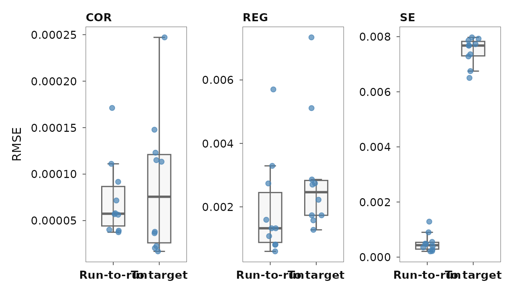
plot_fit() shows the across-run mean difference per
statistic, with error bars for the across-run range
(error_type = "range", default) or mean +/- SD
(error_type = "sd"); dots mark the individual runs.
plot_fit(result_par, standardised = FALSE)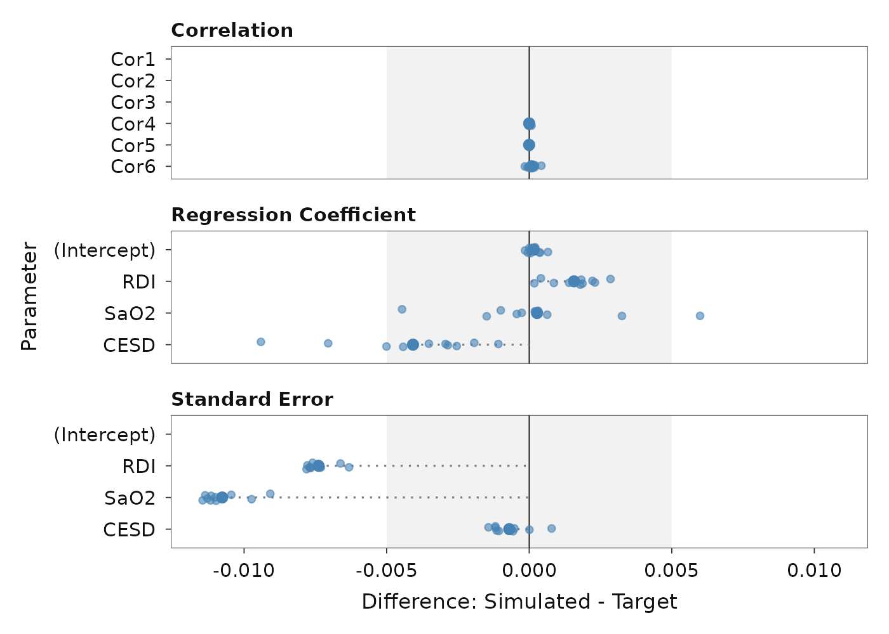
plot_fit(result_par, standardised = FALSE, error_type = "sd")plot() draws plot_stability() by default
and plot_fit() with which = "fit":
4.3 Individual runs
The run with the lowest best objective value is stored in
best; all runs are in results. Both are
ordinary stats2data_mlr objects and support the methods of
Section 3:
result_par$best
#> stats2data MLR result
#> N: 60
#> Equation: Fatigue ~ RDI + SaO2 + CESD
#> Best objective: 0.002273
get_rmse(result_par$best)
#> $rmse_cor
#> [1] 2.262986e-05
#>
#> $rmse_reg
#> [1] 0.001274941
#>
#> $rmse_se
#> [1] 0.006750902
head(result_par$results[[2]]$data)
#> RDI SaO2 CESD Fatigue
#> 1 110.99972 50.712359118 4 19
#> 2 72.50444 11.442881795 7 19
#> 3 31.72919 0.769768721 20 6
#> 4 16.14267 26.309305558 28 15
#> 5 57.21455 0.003990472 9 10
#> 6 21.47157 12.638383351 11 104.4 Stopping at the first converged run
With stop_conv = TRUE, parallel_optim()
stops launching runs once a run has converged, i.e. its best objective
value is below thresh. The example repeats the MLR
optimization of Section 3 with its full iteration budget:
result_first <- parallel_optim(
FUN = optim_mlr,
args = args_mlr,
runs = 10,
cores = 1,
seed = 2026,
stop_conv = TRUE
)
result_first
#> stats2data parallel result
#> Module: mlr
#> Runs: 1 of 10 (stopped early)
#> Converged: TRUE (thresh = 0.005 )
#> Best objective (across runs): 0.00272209
#> Mean objective (across runs): 0.002722091 of 10 requested runs were completed. With
cores > 1, runs are dispatched in batches of
cores, so a whole batch completes before the check.
Shiny interface
All three modules and the parallel workflow are also available in a point-and-click interface:
run_app()The tabs Descriptives, ANOVA, and Linear
Regression correspond to optim_vec(),
optim_aov(), and optim_mlr(). The inputs of
each tab correspond to the arguments of the function (the info icon of
each input names the argument), and setting Number of Runs
above one calls parallel_optim(). The results panel offers
the plots and summaries shown in this vignette. The Download
button exports the result object, the simulated data, and the R code of
the function call, which reproduces the result in R.
References
- Bardwell, et al. (2007). https://doi.org/10.1016/j.jad.2006.06.013
- Bardwell, et al. (2003). https://doi.org/10.1176/appi.ajp.160.2.350
- Bengtsson (2021). https://doi.org/10.32614/RJ-2021-048
- Brown & Heathers (2017). https://doi.org/10.1177/1948550616673876
- Heathers, et al. (2018). https://doi.org/10.7287/peerj.preprints.26968v1
- Open Science Collaboration (2015). https://doi.org/10.1126/science.aac4716
- Reynolds & Besner (2008). https://doi.org/10.1037/0278-7393.34.1.50